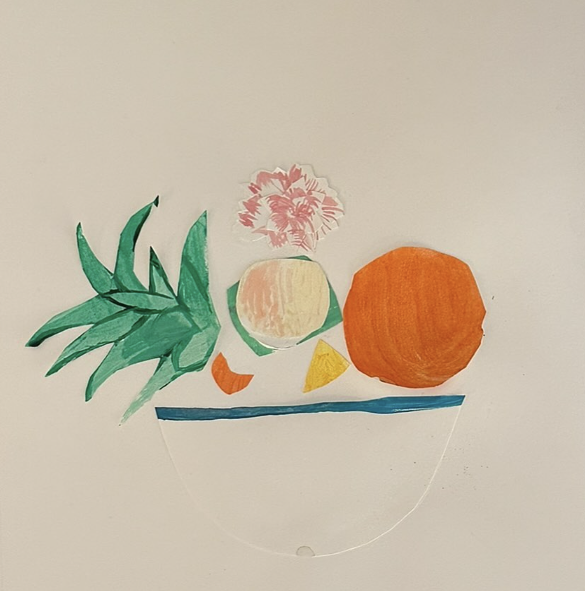
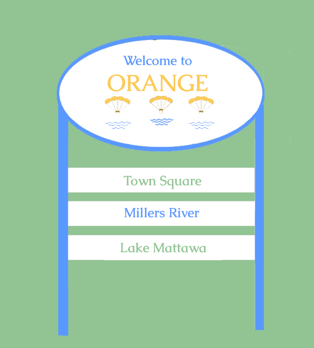
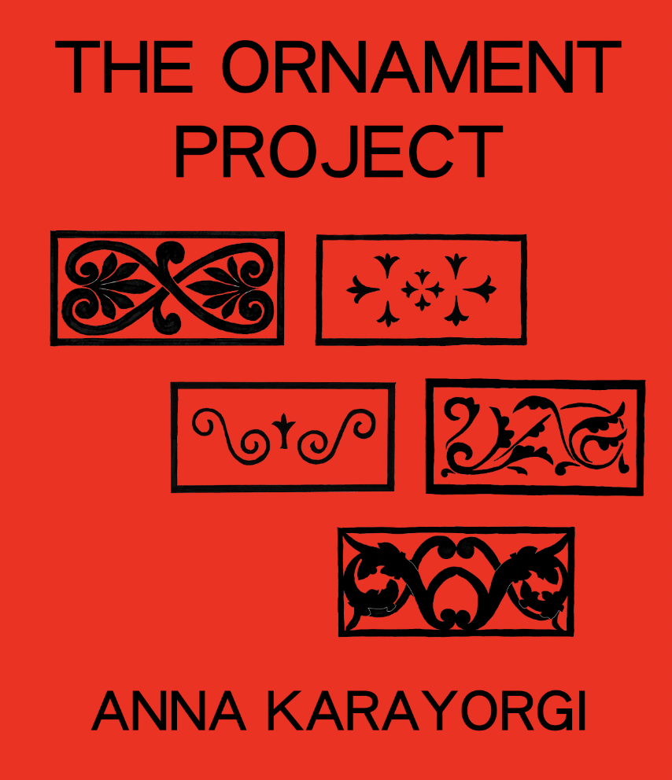
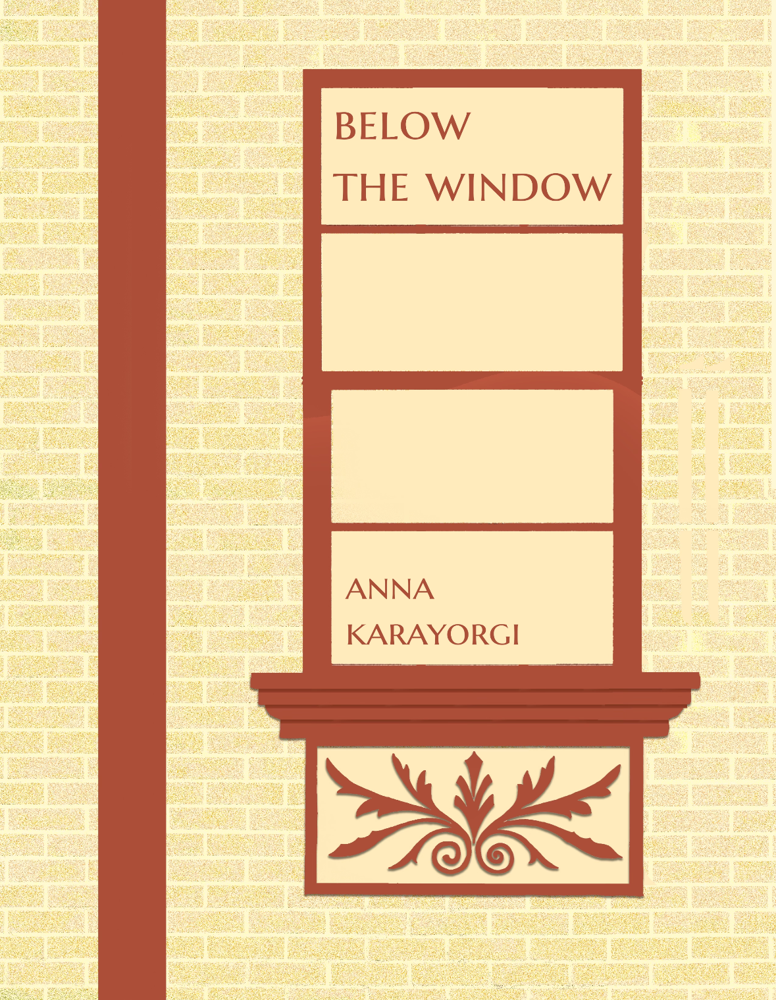

Planning, design, and visual storytelling rooted in local history and material culture.
With a Master's in Regional Planning from UMass Amherst and experience at VHB — conducting environmental review, agency coordination, spatial analysis, and community engagement on projects ranging from New York City's housing policy to small-town downtown revitalization — Klara connects people, place, and policy.
She believes every place has a visual language waiting to be defined, one rooted in its material culture, local history, and the everyday experience of the people who live there. Through graphic design, storefront and façade concepts, and wayfinding systems, she translates that language into the built environment.
Her background in graphic design and journalism adds a strong visual and storytelling sensibility to work that spans transit equity research, municipal cultural planning, stakeholder engagement, and downtown revitalization. She works with municipalities, nonprofits, and small businesses across Western Massachusetts and beyond.
// 02.01
Helping municipalities, nonprofits, and small businesses navigate funding programs, from CDBG Storefront Improvement to state and federal community development grants. Services include eligibility review, application writing, stakeholder engagement strategy, participatory planning, and community outreach design — from first contact to final submission.
// 02.02
Signage, awnings, façade concepts, wayfinding systems, and place-based visual identity rooted in local material culture. From a single storefront to a whole downtown district — design that helps communities tell their story through the built environment and makes places more legible, vibrant, and locally rooted.
// 02.03
Brand identity, print collateral, posters, editorial design, and marketing materials for organizations, small businesses, and cultural institutions. Visual language development that connects a project or organization to its audience — from logo and brand systems to campaign design, publication layout, and digital assets.




// Wayfinding · Orange, MA
Orange, MA
A wayfinding and cultural plan for a post-industrial New England town. Through participatory planning, discovered pollinators as a unifying conservation symbol across political divides — developing a visual identity centered on monarch butterflies integrating ecological restoration, historic preservation, and community placemaking.
// Transit Equity · FTA-Funded Research
Pioneer Valley Transit Authority, Western MA
Research Fellow applying inclusive engagement methods under a Federal Transit Administration HOPE Grant, prioritizing Environmental Justice communities. Developed participatory mapping tools and authored the final grant report with actionable recommendations for equitable route redesign.
// Housing Policy · Environmental Review
New York City, NY
Contributed to the Environmental Impact Statement for New York City's landmark housing opportunity initiative. Conducted GIS-based spatial analysis and land use assessment through CEQR processes, coordinating with NYC agencies including DEP and SHPO.
// Historic Preservation · Archival Research
Cobble Hill Association, Brooklyn, NY
Developed systematic archival research protocols for neighborhood preservation documentation in partnership with the Center for Brooklyn History. Applied qualitative research methods to community identity and cultural heritage conservation.
// Public Scholarship · Editorial Design
Western Massachusetts + Harvard Graduate School of Design
Co-founded an interdisciplinary publication translating planning and design concepts for public audiences. Led a workshop at the Harvard Graduate School of Design on accessible communication of urbanist research.
// Downtown Revitalization · Strategic Planning
Highland Falls, NY · VHB
Developed downtown profiles and strategic recommendations for the Village of Highland Falls under the New York Forward revitalization initiative, focusing on community development opportunities and place-based planning strategies.
Open to consulting, collaboration, and studio projects across Western Massachusetts and beyond.